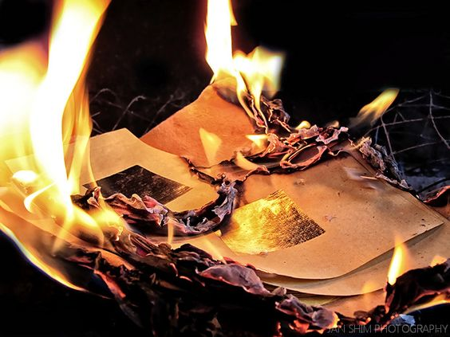
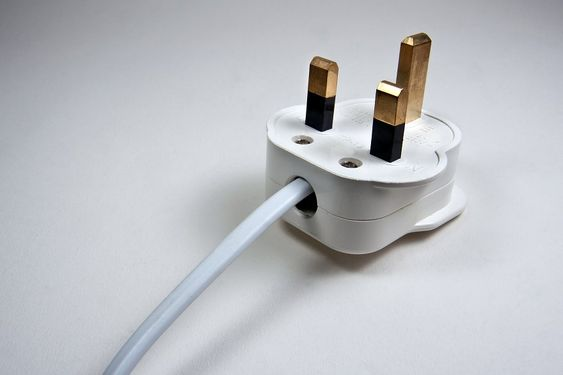

| Tips on preventing fires! | |
|---|---|
|  Keep easily flammable items away from flames |
This might seem obvious, but someone once said 'The obvious are the ones most easily overlooked' and this is no exemption. Never underestimate flames, especially near flammable items since things catch fire quick. There are many ways fire spreads and many ways things catch on fire and having a bunch of flammable items close together isnt a good idea. Not just flames, heat too since heat causes fire so flammable items like paper, cloth and gasoline should be far away and safe, especially from the reach of children. Also make sure you clean things often, you might not know that a lot of flamable items are near a heat source |
|  Turn off items when not in use, and always blow out open flames before sleeping |
these two could count as one since you have to make sure you blow out flames since, obviouly when your asleep you cant tell whats happening and then when you wake up youre in some afterlife because you burnt or suffocated while asleep. As relaxing as the small of a scented candle is (or a reglular candle,to come people...) keep an eye out for open flames. Not just flames any electronics should be off since electicity can cause things to overheat and like I said heat causes fire and as sad as it would be to watch your laptop explode it would also be even sadder to see that explosion set fire to your house. |
 Avoid smoking in your home. |
Smoking can not only burn your lungs but your home too! Smoking isnt really that good in general, but if you do do make sure that youre in a well ventalated room and that youve properly put the cigarette out (and even though were talking about fire safety, make sure you dont smoke in public since second hand smoke is just as bad). Even if you think youve put it out the materials inside a cigarette can keep them burning for a long time. Plus if you threw it away in a trashcan and it wasnt put out properly the papers in the trashcan can start a fire. There are lots of movies & books where this exact thing happens, like in 'Black Beauty' where a stable burnt down because someone left his pipe in a wooden barn. |